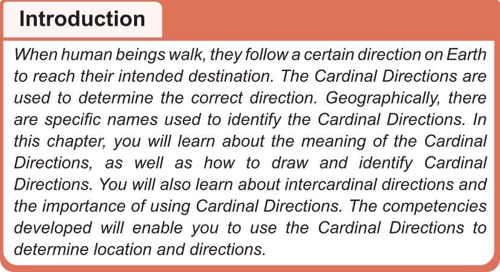

When human beings walk, they follow a certain direction on Earth to reach their intended destination. The Cardinal Directions are used to determine the correct direction. Geographically, there are specific names used to identify the Cardinal Directions. In this chapter, you will learn about the meaning of the Cardinal Directions, as well as how to draw and identify Cardinal Directions. You will also learn about intercardinal directions and the importance of using Cardinal Directions. The competencies developed will enable you to use the Cardinal Directions to determine location and directions.
Determination of a route using the Cardinal Directions.
The Cardinal Directions are basic reference points that are used to indicate the direction of different places on the Earth. These directions are North, South, East, and West. Each direction represents a specific part of the Earth. The Cardinal Directions are represented by letters. That is, the letter N for North, the letter S for South, the letter E for East, and the letter W for West. These symbols are commonly found on maps, compasses, and various navigational tools to assist in pinpointing a specific location and direction to reach the particular